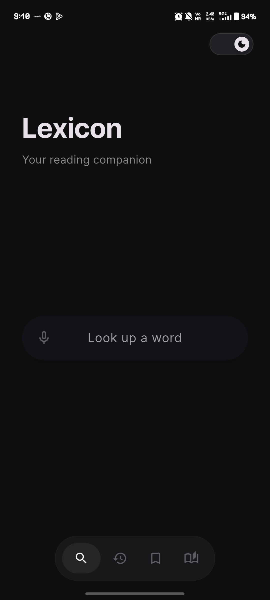
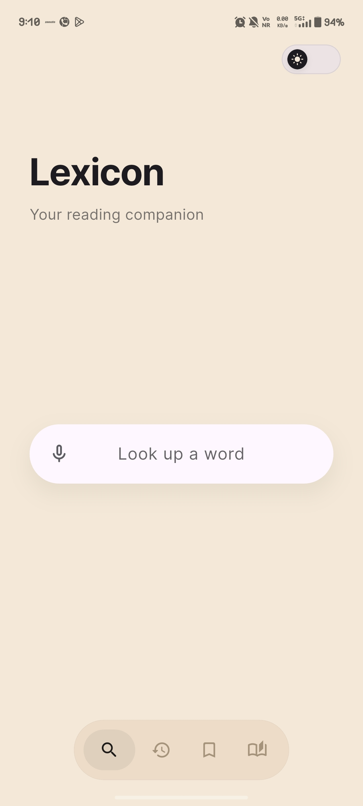

Lexicon
Words deserve more than definitions.

Words deserve more than definitions.
"Lexicon is a small tool I built because I kept running into the same problem while reading. You see a word you don’t know. You search it on Google. Suddenly you’re looking at ads, articles, links, and ten other things. By the time you return to your book, the moment is gone."
Type a word and see clear meanings and synonyms in a simple, distraction-free layout.
Download the dictionary once and search anywhere, even without an internet connection.
A calm, typography-first design that respects your reading experience.
Generate beautiful cards to share your word discoveries with friends.
Search for words directly from your home screen without opening the app.
Automatically detect words from your clipboard for an even faster workflow.




Download the latest APK from Releases.
Enable "Install unknown apps" in settings.
Install and start exploring words.
Version 1.3.1 • 12MB
Dictionaries have become cluttered. In an era where every app competes for your attention, Lexicon is an exercise in restraint. It doesn't want you to stay. It wants you to understand, and then leave.
I built this for people who still value the deep, uninterrupted flow of reading a book. For those who find beauty in the specific meaning of a word but want to avoid the rabbit holes of the modern web.
It is fast because it is focused. It is offline because concentration shouldn't depend on a connection. It is minimal because words deserve to be the center of attention.